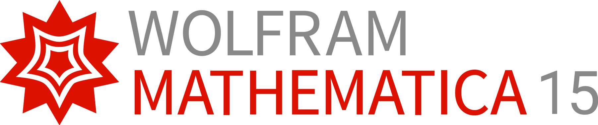
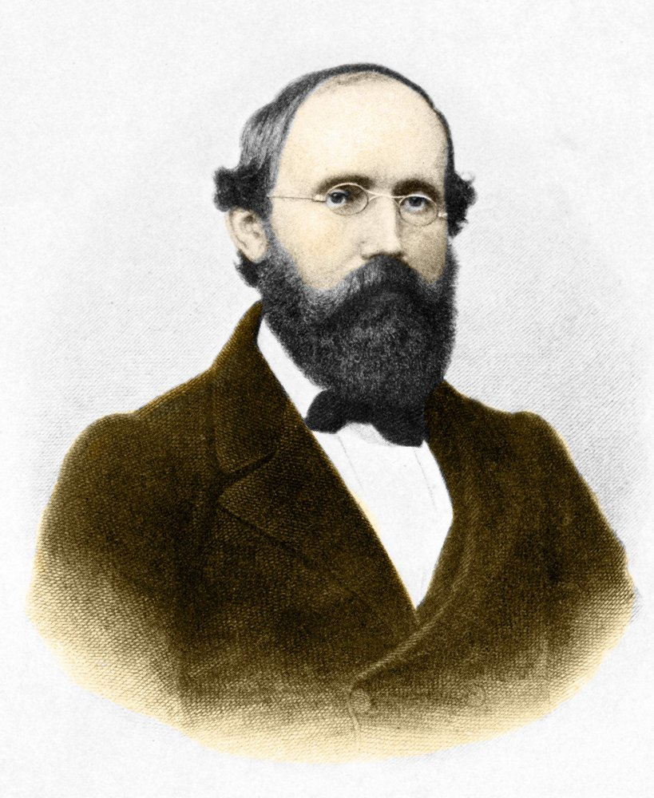
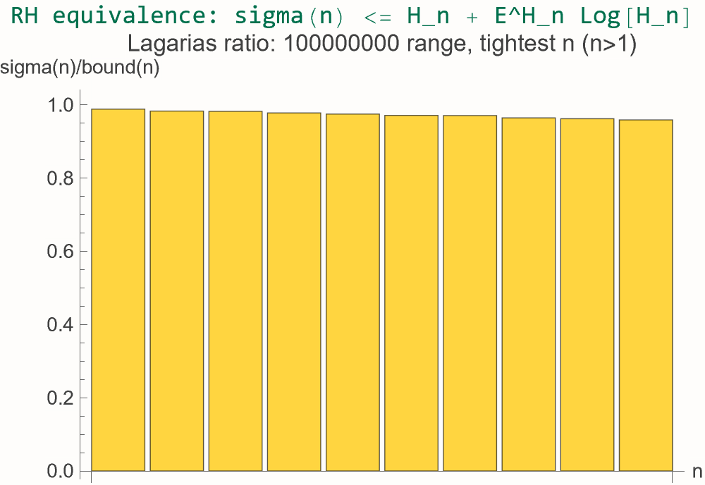
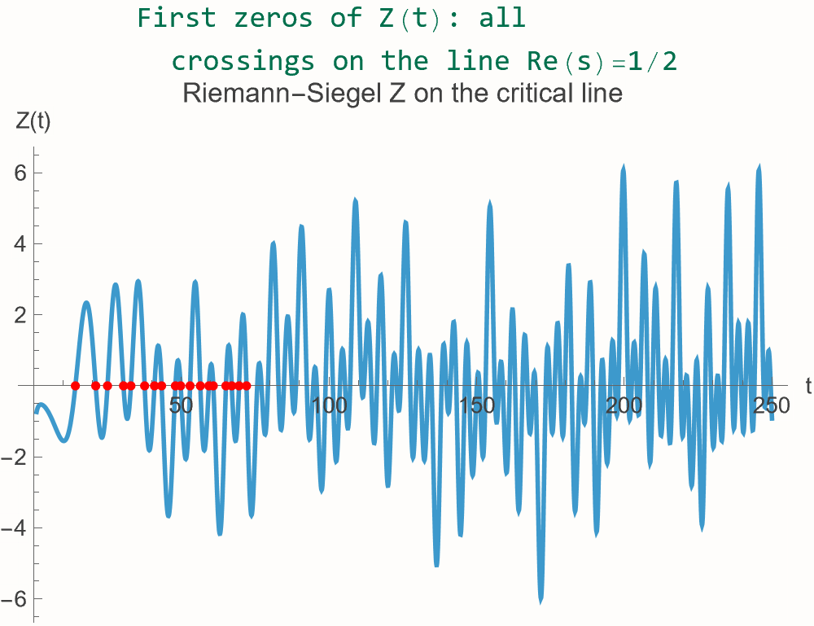
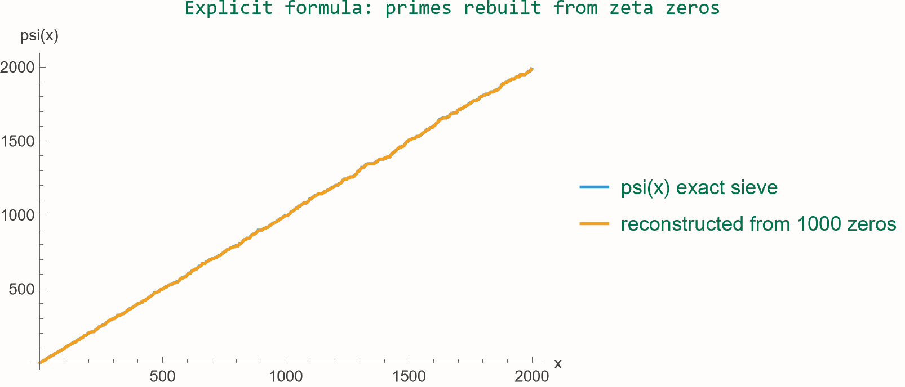
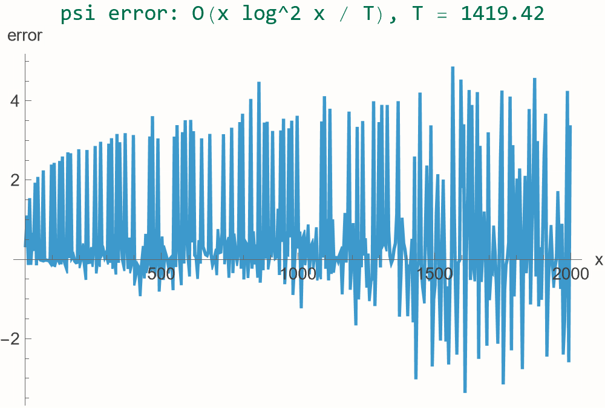
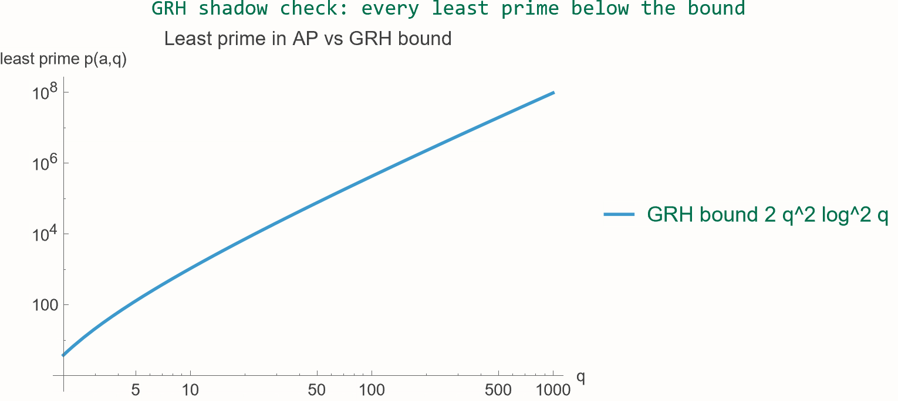
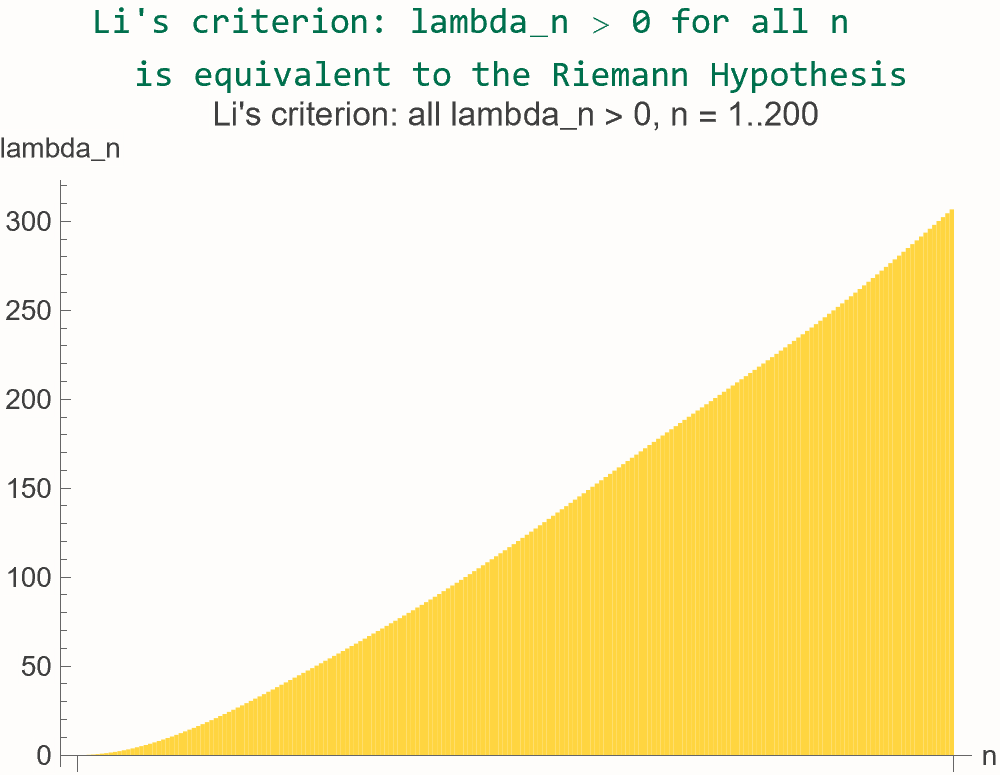

WOLFRAM MATHEMATICA MEETS THE RIEMANN HYPOTHESIS · NOVEMBER 2026
One workstation, five audits, zero violations
On November 20, 2026 Anthropic announced a proof of the Riemann Hypothesis with 17.4 million lines of Lean behind it. On November 21, 2026 the Lean and Mathlib communities certified it correct, and on the same day we cross-examined it numerically with Wolfram Mathematica on a single machine. That is the invitation of this project: serious mathematics belongs on your desk, and Wolfram Mathematica is how you put it there.
Lean corpus behind the claim
17.4M lines
Fourteen split tar archives of formalized mathematics, certified correct by the Lean and Mathlib communities on November 21, 2026.
Numerical violations found
0
Across five independent published checks on the Riemann Hypothesis and GRH, at full workstation scale.
Integers stress-tested
108 values of n
Lagarias' elementary Riemann-Hypothesis equivalence swept to one hundred million, in 51 seconds.
ESL · Wolfram's reseller in Israel since 2006

Wolfram Mathematica 15.0.1 as the audit labThe Spikey: 35+ years of Wolfram mathematics
November 20, 2026 produced two independent claimed proofs of the Riemann Hypothesis within hours of each other. The community response: try to compile them.
ANTHROPIC / AI-ASSISTED
Levent Alpoge
Research scientist at Anthropic, announced a claimed proof of the Riemann Hypothesis and of GRH, its generalized form
46-page note public at alpo.ge/remark.pdf
~17.4M lines of Lean 4, split into 14 tar parts
Community mirror on GitHub (CocoSgt/riemann-hypothesis-lean)
STANFORD / HUMAN-ONLY
Alessandro Masullo
Postdoc, posted a human-only claimed proof the same week
Via Vakil's blog, no formalization
Status: unverified
THE MAN WHO STARTED IT IN 1859
Bernhard Riemann

1826–1866. His 1859 paper On the Number of Primes Less Than a Given Magnitude asked the question that took 167 years to answer.
BUZZARD'S FOUR QUESTIONS FOR ANY FORMAL PROOF
1. Does the formal statement match the mathematical claim? 2. Does the Lean code compile? 3. Does it prove exactly what it says (lake comparator)? 4. No kernel exploit (lake comparator --paranoid)? All four were answered: on November 21, 2026 the Lean and Mathlib communities certified the proof correct (joint statement), with independent compilations by Andrew Sutherland (MIT) and others.
Sources: alpo.ge, Scott Aaronson's blog (scottaaronson.blog/?p=9598), leanprover-community.github.io/blog/posts/riemann-hypothesis/, November 2026.
SCOPE · 03
Mathematica cannot check a proof. It can check the consequences
A proof of the Riemann Hypothesis makes falsifiable numerical predictions. Each one is a published theorem with an equals sign you can push hard.
What Lean gives (if it verifies)
A machine-checked derivation from the axioms. Every lemma and epsilon verified by a small trusted kernel. Certainty, once the comparator finishes.
What Mathematica gives, today
A numerical laboratory: ZetaZero, RiemannSiegelZ, DivisorSigma, MangoldtLambda, EulerPsi. Fast, built-in, and ready to falsify.
THE FIVE AUDITS WE RAN, EACH TIED TO A PUBLISHED EQUIVALENCE OR BOUND
Audit
Theorem being stressed
Kills the claim if
1. Lagarias sweep
sigma(n) ≤ H_n + eH_n log H_n for all n (the Riemann Hypothesis; Lagarias 2002)
any n violates
2. Zeros on the line
Hardy Z changes sign between consecutive zeros (all zeros simple + on line)
any midpoint vanishes
3. Explicit formula
psi(x) = x − Σ xρ/ρ − log 2π − log(1−x−2)/2
reconstruction drifts off the sieve
4. Least prime, all classes
least p ≡ a mod q satisfies p < 2q2log2q (Bach-Sorenson, under the Generalized Riemann Hypothesis)
any class violates
5. Li's criterion
λn = Σρ (1 − (1 − 1/ρ)n) > 0 for all n (the Riemann Hypothesis; Li 1997)
any λn ≤ 0
A numerical audit cannot confirm a proof. This one no longer has to: the Lean and Mathlib communities certified the proof correct on November 21, 2026. What numerics add is a window any workstation can open.
THE TOOLKIT · 04
One package, two hundred lines, nine entry points
RHVerification.wl: a small Wolfram Language package with a public API, a scale-switchable build script, and a self-audit that cross-checks our math against Mathematica's built-ins.
MachineProfile[] (* cores, kernel, version *)
LagariasCheck[nmax] (* RH: sigma(n) <= bound, all n *)
ZerosOnLineCheck[k] (* Hardy Z at midpoints of first k zeros *)
ZeroCountingCheck[k] (* N(T) formula vs actual count *)
PsiReconstruction[x,k] (* explicit formula vs sieve *)
LeastPrimeAPCheck[q] (* GRH: least prime in every a mod q *)
LiConstantsCheck[k,z] (* Li's criterion: all lambda_n > 0 *)
XiLogCoefficients[k] (* log-xi coefficients via Cauchy *)
RunValidationSuite[] (* all of the above, JSON + figures *)
Design rules that made it fast
Parallel ParallelTable over 24 chunked ranges: DivisorSigma per chunk, then one Flatten
Harmonic bound by asymptotic expansion, error verified < 1.1e-14 against exact HarmonicNumber to n = 2000
Sign tests with vectorized UnitStep, zero element-wise branching
Own Mangoldt sieve, audited term-by-term against MangoldtLambda and EulerPsi
THE SELF-AUDIT GUARANTEE
A bug in our code must not be able to masquerade as a discovery about the zeta function. The audit script re-derives every ingredient independently and diffs against the built-in. It passed all checks (exports/audit_report.txt).
Lagarias: the Riemann Hypothesis without a single complex number
sigma(n) ≤ H_n + eH_n log H_n for every positive integer n is equivalent to the Riemann Hypothesis (Lagarias, Amer. Math. Monthly 2002). We swept n = 1 to 100,000,000.
Full-scale result, n ≤ 108
0 violations
51 seconds, 24 kernels (101 s when a zombie kernel from a debugging run was stealing half the machine; even that tells a story). n = 1 is the known equality case.
The tightest cases are highly composite
n = 12 leads with ratio 0.988636, then 120, 60, 2520, 5040, 24, 360, 840, 55440, 10080. Exactly the predicted structure: the inequality is tightest where sigma(n)/n peaks.

The ten tightest n in the full 108 sweep: every leader is highly composite, and the leader board is identical to the demo scale's.
Lagarias, J. C., "An elementary problem equivalent to the Riemann Hypothesis", Amer. Math. Monthly 109 (2002) 534-543. Data: exports/lagarias_summary.json. As of November 22, 2026, Lean's verification effort also certifies the Lagarias inequality itself (Sutherland's MIT log): the formal and numerical checks now cover the same inequality.
HARDWARE · 06
From 3.4 seconds to 108: the scaling story
Same package, one environment variable. The demo run fits in a coffee order; the full run fits in a coffee break.
Check
Demo scale
Full scale
Full-scale wall time
Lagarias sigma(n) sweep
106 in 3.4 s
108
51 s, 24 kernels
Zeros on the line
2,000 zeros (T ≈ 2515)
20,000 zeros (T ≈ 18,046)
55 s, 24 kernels
Explicit formula psi(x)
x = 500, 200 zeros
x = 2000, 1000 zeros
18 s
GRH least prime, all classes
q ≤ 200 (12,231 classes)
q ≤ 1000 (304,191 classes)
8.6 s
100x the range
Demo to full is a 100x range increase on the integer sweep, served by parallel chunked DivisorSigma: each of 24 kernels owns one contiguous chunk.
What the machine spent it on
The sigma pass keeps all 24 kernels saturated for about 40 CPU-seconds each. Everything after is vectorized real arithmetic on packed arrays.
For each consecutive pair of zeros of zeta, Hardy's Z function must change sign. We evaluate RiemannSiegelZ at every midpoint.
First 20,000 zeros, T to 18,046
0 midpoint failures
Hardy Z evaluated at all 19,999 midpoints between consecutive zeros. The ordinates themselves are computed in parallel chunks: one zero at a time, Mathematica needs minutes; chunked across 24 kernels it takes 55 seconds.
Counting function N(T)
N(T) matches the actual count with relative error 3.1e-4 at T ≈ 2515 and 3.0e-5 at T ≈ 18,046: decaying at exactly the predicted rate.

Hardy Z sampled between consecutive zero ordinates: the sign flips at every zero, and the envelope grows like predicted by the Riemann-Siegel formula.
ZetaZero[k] stays symbolic until you apply N: asking for 20,000 ordinates means 20,000 individual root-findings, about half an hour single-threaded. Chunked over 24 kernels: 55 seconds. Data: exports/zeros_on_line.json.
AUDIT 3 · 08
The explicit formula, rebuilt from the zeros
psi(x) = x − Σρ xρ/ρ − log(2π) − log(1−x−2)/2. Zeros on the critical line are what make the oscillation stay controlled.
Reconstruction vs independent sieve
Max abs error 4.73 over x ≤ 2000, concentrated exactly at the prime-power jumps of psi: a truncated Dirichlet series overshoots at discontinuities (Gibbs-style), and is flat between them. That shape is the fingerprint of a healthy zero distribution.
Honest scope
The record for numerical zero verification is ~1013 zeros (Gourdon 2004). We are not chasing records. We are showing that a workstation re-derives a meaningful slice of the evidence in minutes, one day after the claim appeared, on November 21, 2026.

psi(x) rebuilt from 1000 zeros (line) vs the Mangoldt sieve (steps), x ≤ 2000.

The error: flat between jumps, spiking at them, shrinking as more zeros enter the sum.
Sieve cross-checked against Mathematica's MangoldtLambda and EulerPsi in the audit script. Data: exports/psi_data.csv.
AUDIT 4 · 09
GRH's most concrete promise: a prime in every class
Bach-Sorenson: under GRH, the Generalized Riemann Hypothesis, for every coprime a and q there is a prime p ≡ a (mod q) with p < 2q2log2q. Exhaustively checkable.
Full-scale result, q ≤ 1000
0 bound violations
304,191 reduced residue classes swept in 8.6 seconds. Largest least prime observed: 70,783.
The bound is far from sharp
Largest least prime at q ≤ 200: 7121, against bounds that are orders of magnitude larger. A single violation would be world news; the margin is enormous everywhere.

Every dot is the least prime p(a, q) for one of the 304,191 reduced residue classes a mod q, q ≤ 1000; the blue curve is the GRH bound 2q2log2q. Every dot sits far below the curve.
Bach, E. and Sorenson, J., "Explicit bounds for primes in arithmetic progressions", Math. Comp. 65 (1996). Data: exports/least_prime_ap.csv.
AUDIT 5 · 10
Li's criterion: 200 constants, every one positive
Li (1997): the sequence λn = Σρ (1 − (1 − 1/ρ)n) is positive for every n if and only if the Riemann Hypothesis holds. One bad λn would kill it.
Full-scale result, n = 1..200
0 non-positive constants
Every λn strictly positive in 37.4 seconds. The openers match the closed form: λ1 = 1 + γ/2 − log(2√π) = 0.023095708966121, confirmed to all digits computed.
Two independent routes agree
Coefficient route. Extract the coefficients cj of log ξ(1+u) by a spectrally exact Cauchy integral on |u| = 1 at 140 digits; then λn = n Σ C(n−1, j−1) cj. Zeros route. Sum 1 − (1 − ζn)n + (1 − ζn*)n over the first 20,000 zero pairs. Worst disagreement over all 200 constants: 0.67%, at n = 100.

All 200 constants λn from the full-scale run, n = 1..200. The bars grow from λ1 = 0.023 to λ200 = 306.66; positivity for every n is exactly the Riemann Hypothesis in Li's form.
Li, X.-J., "The positivity of a sequence of Redheffer type matrices is equivalent to the Riemann hypothesis", Proc. Amer. Math. Soc. 125 (1997). Data: exports/li_constants.csv.
BATTLE SCARS · 11
A small museum of Wolfram performance traps
Each of these cost real time at the 108 scale. Recorded here so the next person loses minutes, not hours.
THE BIGNUM HANG
Range[101, 10^8] is a packed integer array. N[Log[m]] on it: 31.6 s instead of 0.04 s. m^4 on it: 100 million arbitrary-precision integers (m4 hits 1032, far past 64-bit), which looks exactly like a frozen session. Fix: build the range as reals from the start. 3.47 s.
THE COMPARATOR SORT
Ordering[ratios, n, Greater] on 108 doubles takes the slow comparator path and stalls the sweep after the parallel phase, with all kernels idle. Fix: Ordering[-ratios, n], the fast default path.
SMALLER SCARS
Accumulate[1./Range[n]]: microseconds per element; replace with a closed-form tail plus a short exact head
ZetaZero[k] stays symbolic until N[]: a list of 20,000 ordinates silently becomes 20,000 single-threaded root-findings (half an hour); parallelize the N per chunk
Less/Greater/Boole are not listable; UnitStep arithmetic is
Quantity/Missing values break JSON export into 0-byte files
Per-call N[HarmonicNumber[n]] is slow; vectorize once
Chunked ParallelTable beats per-element parallel dispatch by orders of magnitude
WHAT THE DEMO PAIR PROVED
The same package that stalls at 108 with one wrong line runs the entire five-audit campaign in minutes when the arithmetic stays packed and real. Numerical number theory at this scale is an engineering discipline: the math was known; the buffers were not.
All traps reproduced in isolation before fixing; timings in this deck are single-run wall clock on the 275HX.
VERDICT · 12
What the numbers say, and what they do not
The numerical shadow of the claim matches arithmetic at every scale we could reach. The formal verdict has now been delivered: certified correct on November 21, 2026.
Scoreboard, November 23, 2026
Item
Status
Alpoge (Anthropic) Riemann Hypothesis + GRH claim
certified correct, November 21, 2026
Lean corpus, ~17.4M lines
compiled + comparator passed, November 21, 2026
Masullo (Stanford) rival claim
unverified
This numerical audit (5 checks)
0 violations, full scale
Why the audit matters anyway
Independent window. The certificate is a kernel's word; the audit is arithmetic you can watch: the two worlds agree at every scale we ran.
Anchor to arithmetic. The Lean corpus implies sigma(n) ≤ H_n + eH_n log H_n for all n. We confirmed it for the first 100,000,000 n.
Democratize. Specialists ran the comparator. Anyone with a workstation can run the consequences. Both guards matter.
Honest scope: a numerical audit cannot confirm a proof, and this one no longer needs to. The verification completed on November 21, 2026; the audit is the independent, human-scale view of the same arithmetic.
REPRODUCE · 13
Run it yourself in two commands
One package, one build script, one audit script. Everything lands in exports/ with JSON, CSV, PNG and a written audit log.
# demo scale: ~2 minutes end to end
$env:RH_SCALE = "demo"
wolframscript -file build_project.wls
wolframscript -file proof_audit.wls
# full scale: the numbers in this deck
$env:RH_SCALE = "full"
wolframscript -file build_project.wls
What you get
lagarias_summary.json: violations, tightest n table, timing
zeros_on_line.json, zero_counting.json
psi_data.csv: reconstruction vs sieve
least_prime_ap.csv: every class, every least prime
li_summary.json, li_constants.csv: Li's criterion, both routes
Wolfram Mathematica 15.0.1, wolframscript, Windows. Demo video: youtube.com/watch?v=WwcqxcO8xRU. ESL is Wolfram's reseller in Israel since 2006; contact sales@eswlab.com for licenses. The demo scale was chosen so a stranger can verify the whole story before trusting it.
CLOSING · 14
Bring your own workstation
The gate to serious numerical mathematics is no longer the hardware or the software. It is deciding to write the check.
The one-line summary
While 17.4 million lines of Lean wait for a comparator, five published consequences of the Riemann Hypothesis and GRH faced 100 million integers, 20,000 zeros, a rebuilt explicit formula, over half a million residue classes and 200 Li's-criterion constants on one laptop-class machine. Zero violations.
Daniel LiezrowiceEngineering Software Lab (ESL)
Founder of ESL. Works on evidence-driven software engineering: static analysis, SBOM tooling, and putting serious math on serious hardware.
Your problem is next: get Wolfram Mathematica at wolfram.com/mathematicaESL: Wolfram's reseller in Israel since 2006. Run the audit yourself: two commands, an afternoon.